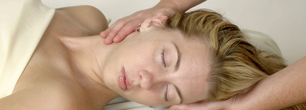

Paralisia total de todos, ou alguns, músculos da expressão facial.
Tratamento em Fisioterapia

Em Fisioterapia, não existem “receitas”, mas sim linhas de conduta a seguir, ou seja, o tratamento deve ser adequado a cada paciente, e ao estado em que se encontra, pois cada caso é um caso único e singular, e devido ás diferenças existentes entre os indivíduos (desde diferenças anatómicas, fisiológicas, biomecânicas, etc.) o mesmo tratamento pode não ter o mesmo resultado em pacientes diferentes.
O tratamento deverá ser adaptado e personalizado em função do Deficit e da Colaboração do paciente. O Nervo Facial é um nervo misto sob a dependência de um sistema voluntário e automático-reflexo que pode levar muito tempo a recuperar.
O tratamento pode durar de 15 dias a 3 semanas, nas Paralisias Faciais pouco severas, até 4 anos, nas formas mais graves (Neurinoma do VIII ou VII nervo Craniano).
Nas crianças, os exercícios serão praticados sob a forma de jogos com indicações indispensáveis. Nos doentes que estão motivados é bastante importante educá-los, quanto aos recém-nascidos quem tem que ser educado, são os pais.
O tratamento das Paralisias Faciais pode incluir:
Massagem;
Electroterapia;
Reeducação dos Músculos da Face;
Método de Kabat;
Estimulação com Gelo;
Exercícios Faciais;
Massagem: Pode fazer-se vários tipos de massagens, entre as quais:
Drenagem Linfática:
Se há Ptose da Pálpebra inferior com edema ou se há edema Pós-cirúrgico, um hematoma Pós-cicatricial ou traumático é necessário utilizar a drenagem linfática.
Massagem dos Pontos Centrais:
Fazer uma massagem bastante suave começando pelo “ ponto central “ ao nível da Fronte (perto da raiz das sobrancelhas).
Ao mesmo tempo massajar um ponto situado ± no terço anterior, linha mediana, do couro cabeludo (zona que apresenta um plano diferente, facilmente notado ao tacto).
Massajar bem estes pontos em fricções circulares, no sentido dos ponteiros de um relógio, e terminar com manobras de mobilizações do Couro Cabeludo. Ao nível da Face propriamente dita, as manobras devem ser muito leves.
Ao nível da fronte, na junção do ângulo temporo-maxilar externo e ao nível do nariz fazer uma massagem em forma de “8”.
Massagem Endobucal:
Esta massagem far-se-á muito suavemente e permitirá verificar as eventuais tetanizações que podem surgir nos músculos Grande Zigomático, Bucinador, Triangular e Cutâneo do Pescoço.
Se for este o caso, é necessário massajar fortemente estas hipertonias intrabucais e seguidamente estirar a bochecha progressivamente para baixo e para dentro, para o eixo de simetria, e mantê-la estirada durante alguns instantes, só depois relaxar a pressão manual progressivamente.
Esta massagem pode ser executada pelo Fisioterapeuta e pelo doente, caso este faça reeducação em casa, assim sendo:
O Fisioterapeuta deve introduzir o 2º dedo (indicador), protegido por uma luva, na cavidade bocal e massajar a bochecha. Enquanto isto, o polegar deve estar no exterior, procurando os pontos de inserções dos músculos, pontos estes que têm que ser muito bem massajados. É necessário ter em atenção a reacção do doente, visto esta massagem ser bastante dolorosa, por vezes.
Após a massagem, deve estirar-se o músculo lentamente e manter o estiramento durante alguns segundos, relaxando progressivamente a pressão digital.
O Doente deve introduzir o polegar, da mão aposta à hemiface afectada no interior da boca, colocando o dedo indicador e o médio (da mesma mão) no exterior da cavidade bocal.
O interior da boca deve ser muito bem massajado com a ajuda dos três dedos. Posteriormente a este exercício, o doente deve estirar a bochecha, lenta e progressivamente, sem fazer deslizar os dedos e tentando controlar o movimento da pálpebra inferior, “proibindo-a” de descer.
Para os músculos superiores, este estiramento deve ser feito obliquamente para baixo, para o lado não afectado. Se pelo contrário, o estiramento for para os músculos inferiores da face, deve ser feito obliquamente para cima, para o lado não afectado;
As vantagens da massagem neste tipo de tratamento são a redução do edema (drenagem linfática), o efeito que tem sobre a circulação (na fase flácida) e sobre a detenção muscular após massagem dos pontos dolorosos (fase de hipertonia).
Electroterapia: A electroterapia só será útil na forma periférica das Paralisias Faciais e caso a estimulação manual não tenha dado resultado.
Correntes Galvânicas;
Correntes Excito-Motoras progressivas de base exponencial;
No entanto, este tipo de técnica de tratamento também está contra-indicada em situações como a estimulação de músculos desnervados por meio de impulsos de curta duração e de frequências tetanizantes.
As principais vantagens da utilização de Electroterapia neste tipo de tratamentos são:
Diminuir o grau de atrofia muscular;
Evitar a esclerose parcial do músculo;
Manter a nutrição muscular e facilitar a eliminação dos exsudados, devido à sua influência trófica;
Reeducação dos Músculos da Face:
Esta Reeducação é Longa e Minuciosa, exigindo da parte do doente bastante concentração, uma aprendizagem constante e, por tudo isto, um controlo enorme em frente ao espelho.
Este tipo de tratamento, deve ser quotidiano e feito 2 vezes por dia (de manhã e à tarde, caso seja possível), não devendo ter sessões de mais de 15 minutos (na fase inicial).
Previamente à reeducação, a hemiface afectada deve ser aquecida, aplicando-lhe calores húmidos. A duração desta aplicação varia consoante a fase em que o doente se encontra, assim sendo, na Fase Flácida deve ser aplicado calor húmido apenas durante 10 minutos, enquanto que na Fase de Hipertonia não deve passar os 15 minutos. (é necessário ter em conta que o calor não deve abarcar a região do olho nem do ouvido)
Os movimentos indicados ao doente neste tipo de tratamento, deverão ser executados lenta e progressivamente na amplitude indicada, como tal deve começar-se por um esboço, seguido de movimentos na amplitude incompleta e por fim, movimentos na amplitude completa. Estes exercícios não devem ser executados de forma forçada.
Método de Kabat:
Este método, também designado de Facilitação Neuromuscular Proprioceptiva (P. N. F.), promove e acelera as respostas dos mecanismos neuromusculares através da Estimulação dos receptores.
Facilitação: Em Biologia, significa aceleração ou promoção de um processo natural, na Reabilitação, visa a melhoria do movimento e em Fisiologia tenta elevar o estado central de excitação, diminuindo a resistência ao impulso nervoso nas sinapses. Este impulso prepara o axónio para o próximo estimulo, visando o aparecimento da acção do músculo. Todas as vezes que se fala em Facilitação (reabilitação), fala-se em inibição. Quando facilitamos, estamos a estimular, logo, aumentamos a estimulação, assim sendo, alcança-se a mudança da permeabilidade da membrana, ocorrendo a despolarização, caso o estímulo seja limiar.
Neuromuscular: Este método utiliza sempre a unidade motora (motoneurónio mais as fibras musculares por ele enervadas) que trabalha em relação a ser “tudo ou nada”.
Proprioceptiva: Usa a estimulação dos receptores proprioceptivos, embora utilize todos os outros receptores.
De acordo com Adler, S.; Beckers, D; Buck, M; 1999 (defensores do método de Kabat) o principal objectivo deste método visa conseguir o movimento normal que depende das acções integradoras do sistema nervoso central, da morfologia, da cinesiologia, do aprendizado do desenvolvimento motor e da conduta motora. Os padrões utilizados neste tipo de tratamento, visam a utilização de valores positivos, como tal, trabalham-se as partes mais fortes, irradiando energia nervosa para as mais fracas(7).
É ainda objectivo deste método, induzir ao doente a capacidade de usar as partes mais fortes, para que se obtenha a irradiação do impulso nervoso.
Como processos básicos deste método, devem salientar-se:
Padrões de Movimento: Usa movimentos em massa, globais, que são executados nos três planos do espaço, feitos em diagonal e espiral. Cada sector do aparelho locomotor possui duas diagonais de movimento e cada diagonal tem dois padrões antagonistas entre si.
Estímulo e reflexo de estiramento: Fisiologicamente, são a mesma coisa. Na prática, o estímulo é o máximo de alongamento do músculo; é a posição do início de cada padrão, enquanto o reflexo de estiramento é a ultrapassagem rápida do limite dado ao estiramento.
Tracção – Aproximação – Contactos Manuais e Máxima Resistência: São utilizados para estimular os receptores da pele e daí a máxima resistência, que é variável de pessoa para pessoa, do tipo de contracção muscular (isotónica ou assimétrica) e do tipo de movimento. Tem como principal objectivo a irradiação do estímulo nervoso.
Comandos Verbais e Estímulos Visuais: Existe reflexos entre os Tubérculos Quadrigémeos Inferiores (visão) relacionados com o núcleo motor.
A Sequência dos Movimentos: Nas Paralisias Faciais, os estímulos devem ter início na porção superior da Face, mesmo que não seja esta a região mais afectada.
Estimulação com Gelo:
Neste tipo de tratamento podemos obter dois efeitos: o efeito analgésico e o efeito estimulante. Se quisermos um efeito analgésico fazem-se movimentos circulares lentos sobre uma pequena área (ventre muscular, ponto doloroso), mas se quisermos um efeito estimulante (facilitar a actividade muscular) aplica-se o gelo de forma rápida e breve sobre o dermátomo da pele com a mesma enervação do músculo em questão.
O uso excessivo do gelo é um risco pois pode provocar no paciente queimaduras por gelo, a aplicação nunca de passar dos 10 minutos.